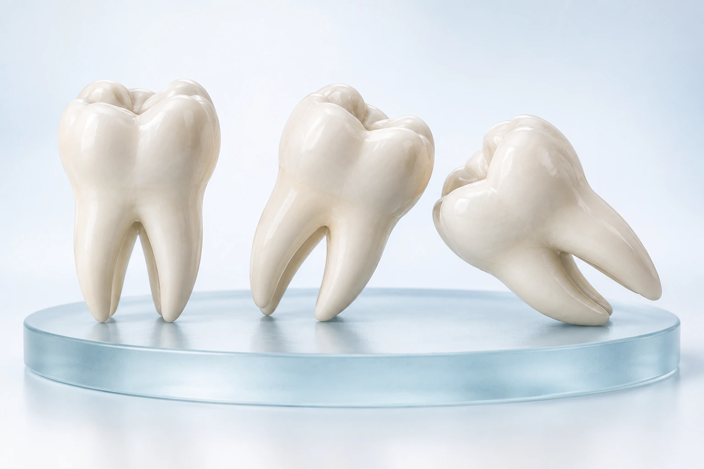
Mehr erfahrenWeisheitszähne
Wann eine Entfernung sinnvoll ist und wie die Behandlung abläuft.
Zähne erhalten. Eingriffe verstehen.
Thema auswählen · QR-Code mit der Handykamera scannen · In Ruhe lesen

Mehr erfahrenWann eine Entfernung sinnvoll ist und wie die Behandlung abläuft.
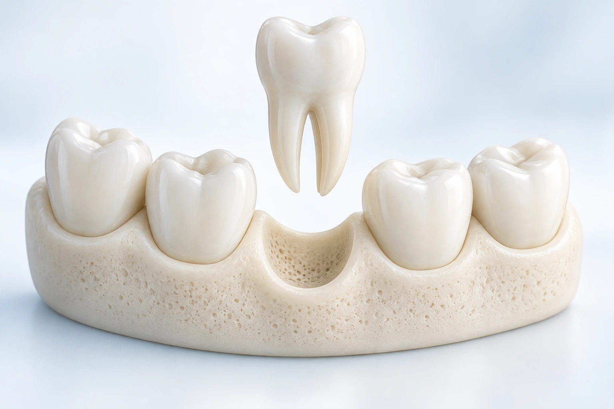
Mehr erfahrenWas bei einer Zahnentfernung wichtig ist und welche Möglichkeiten danach bestehen.
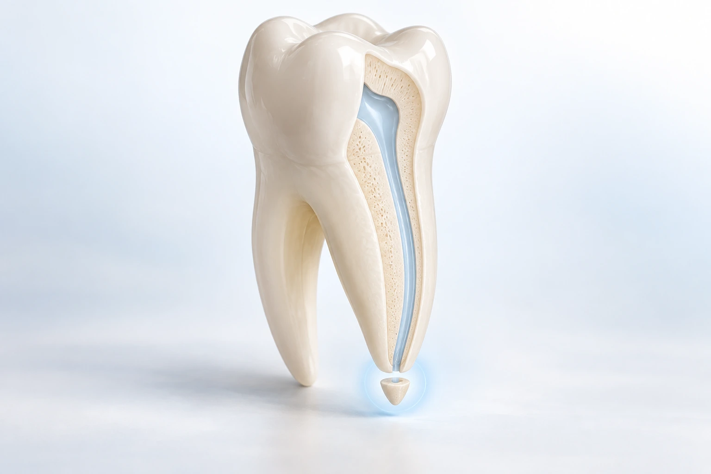
Mehr erfahrenWie eine Behandlung an der Wurzelspitze zum Zahnerhalt beitragen kann.
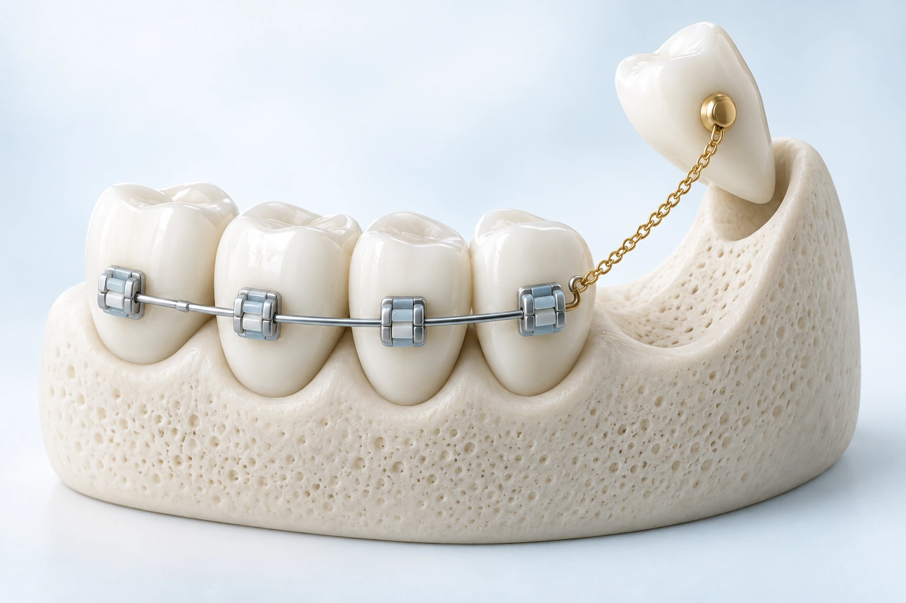
Mehr erfahrenWie Freilegung und Zugkette einen zurückgehaltenen Zahn in die Zahnreihe führen können.
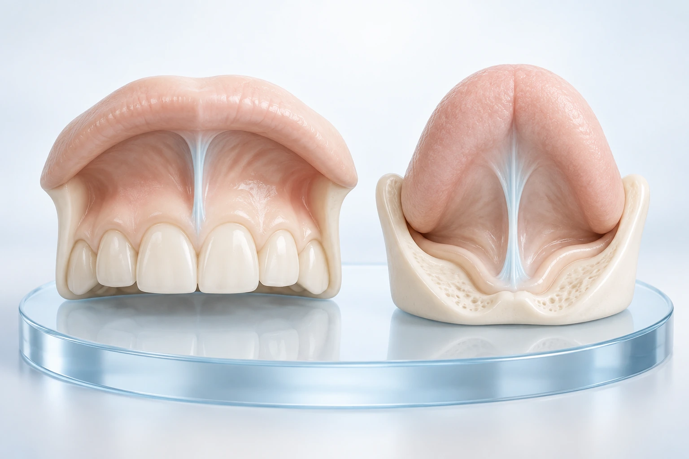
Mehr erfahrenWann eine Korrektur sinnvoll sein kann und wie sie durchgeführt wird.
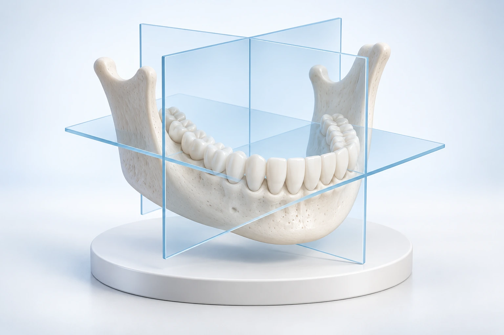
Mehr erfahrenWas dreidimensionale Bilder zeigen und wann sie bei der Planung helfen.
Fester Halt. Individuelle Möglichkeiten.
Thema auswählen · QR-Code mit der Handykamera scannen · In Ruhe lesen
Wie Implantat, Aufbau und Zahnersatz zusammenwirken und welche Möglichkeiten es gibt.
Zuerst simulieren wir Ihren Zahnersatz in 3D. Daraus leiten wir Implantatpositionen und möglichen Knochenbedarf ab.
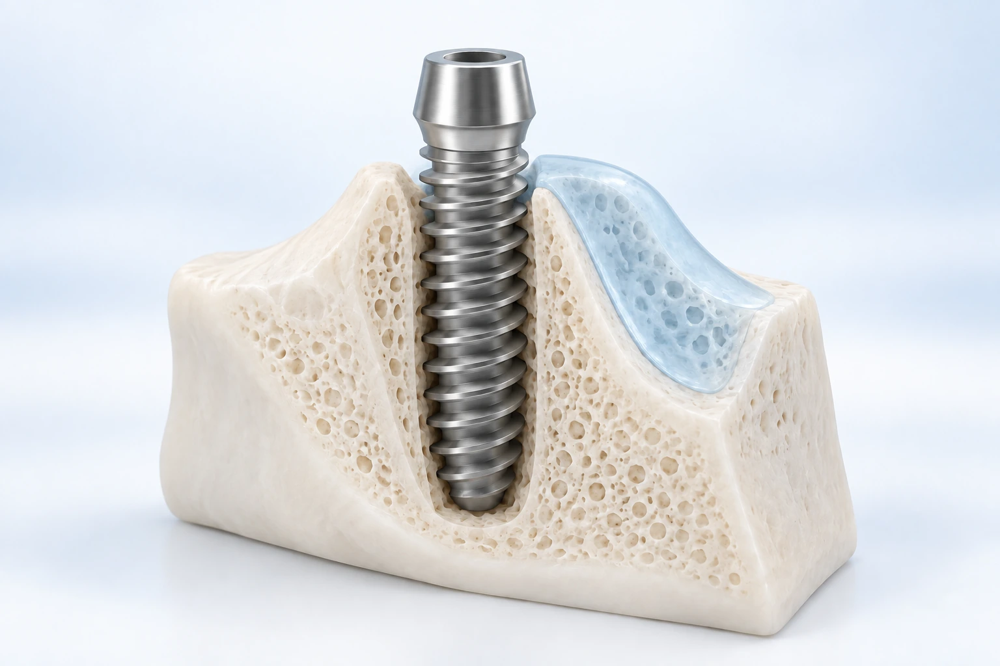
Mehr erfahrenWie ein geeignetes Knochenlager für die geplanten Implantate geschaffen werden kann.
Wie im seitlichen Oberkiefer unter der Kieferhöhle Platz für zusätzlichen Knochen entsteht.
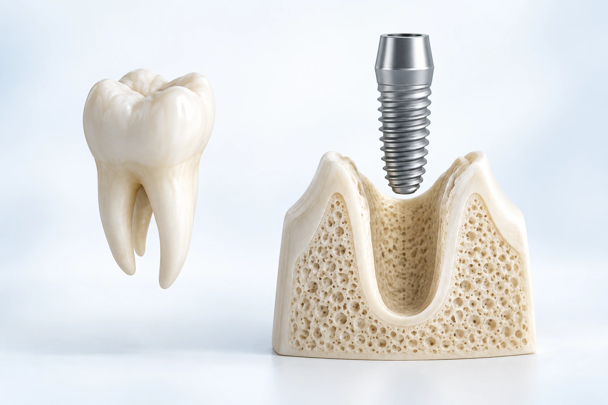
Mehr erfahrenWann ein Implantat direkt nach der Zahnentfernung infrage kommt und welche Voraussetzungen gelten.
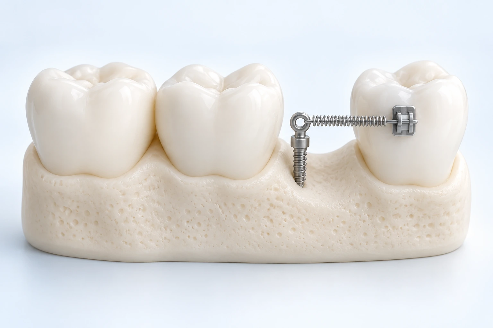
Mehr erfahrenKleine Verankerungen unterstützen gezielte Zahnbewegungen unabhängig von anderen Zähnen.
Natürlich und individuell.
Behandlung, Möglichkeiten und Risiken kennenlernen · QR-Code scannen
Behandlungsmöglichkeiten für Stirn, Zornesfalte und Augenregion – individuell abgestimmt.
Feuchtigkeit und Hautstruktur: Was eine Behandlung mit Hyaluronsäure leisten kann.
Informationen zur Behandlung von Nasolabial- und Marionettenfalten.
Lippenform, Kontur und Volumen – passend zu Ihren Gesichtszügen.
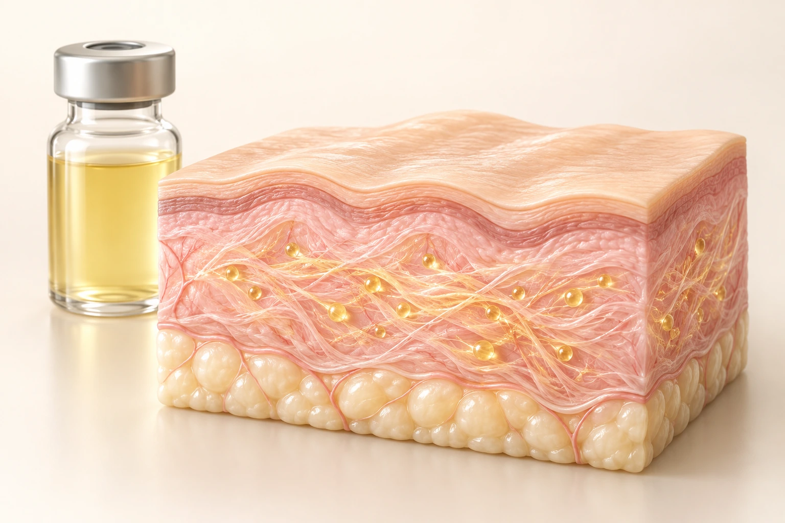
Mehr erfahrenEigenblutbehandlungen und Microneedling: Möglichkeiten für Ihre Hautqualität.
Behandlung von Hautüberschuss am Oberlid – nach sorgfältiger Untersuchung.
Wenn die Kaumuskulatur überlastet ist.
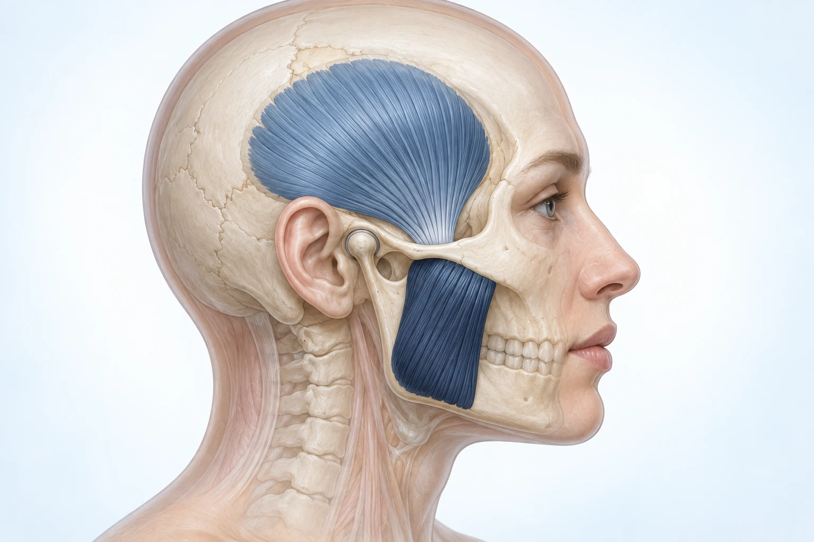
Bei ausgewählten muskulären Beschwerden kann eine gezielte Behandlung die Muskelaktivität und Kraft beim Pressen vorübergehend vermindern.
Knirschen und Pressen können die Kaumuskulatur belasten. Nicht jede CMD-Beschwerde hat dieselbe Ursache.
Schiene, Physiotherapie und der bewusste Umgang mit Pressgewohnheiten bleiben wichtige Möglichkeiten.
Kein Heilungsversprechen: Die Wirkung ist zeitlich begrenzt. Risiken und Eignung besprechen wir persönlich.